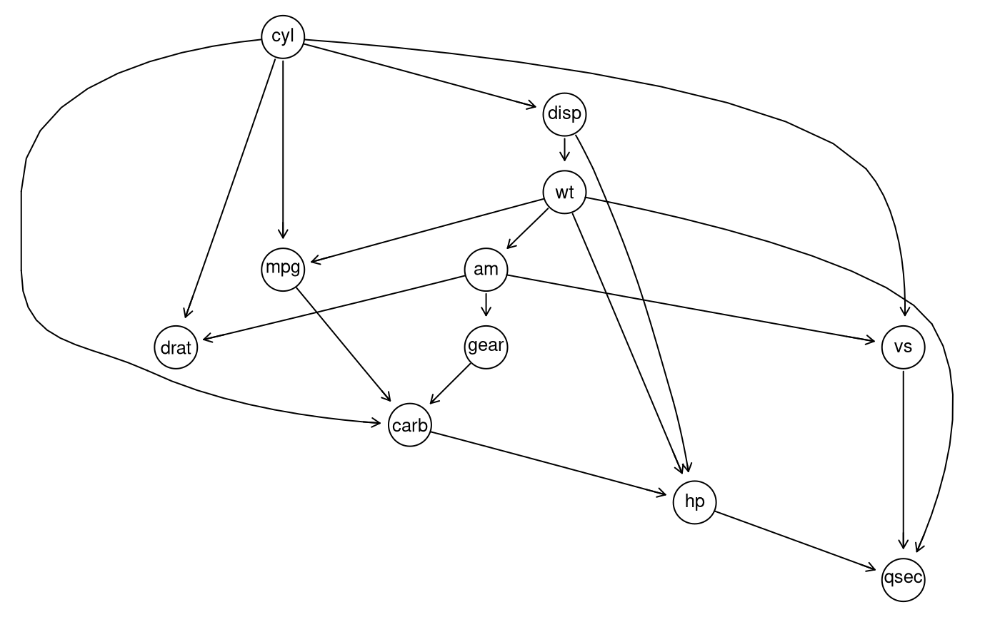

The goal of datools is to cover a lot of convenient tools useful for machine learning consulting using R
Build status


Installation
You can install datools from github with:
# install.packages("devtools")
devtools::install_github("DoktorMike/datools")Optionally you can also install the Rgraphviz package which is required for the graph learning visualization.
if (!requireNamespace("BiocManager", quietly = TRUE))
install.packages("BiocManager")
BiocManager::install("Rgraphviz")Example
Say you have a vector of weekdays and you would really like to have that one hot encoded for use in your algorithms then oneHotEncoder comes to the rescue!
## basic example code
library(datools)
library(lubridate)
#>
#> Attaching package: 'lubridate'
#> The following object is masked from 'package:base':
#>
#> date
oneHotEncoder(x=wday(seq(as.Date("2017-10-07"), by ="days", length.out = 10),
label = TRUE))
#> Data Sun Mon Tue Wed Thu Fri Sat
#> 1 Sat 0 0 0 0 0 0 1
#> 2 Sun 1 0 0 0 0 0 0
#> 3 Mon 0 1 0 0 0 0 0
#> 4 Tue 0 0 1 0 0 0 0
#> 5 Wed 0 0 0 1 0 0 0
#> 6 Thu 0 0 0 0 1 0 0
#> 7 Fri 0 0 0 0 0 1 0
#> 8 Sat 0 0 0 0 0 0 1
#> 9 Sun 1 0 0 0 0 0 0
#> 10 Mon 0 1 0 0 0 0 0PCA fun
If you ever need to illustrate for your peers what sort of direction your original data is pointing to in the PCA space this function comes very much in handy.
library(datools)
data(iris)
plotPCAComponent(iris[,-5], iris$Species) + theme_minimal()
Indices
Splitting up a data.frame or a tibble into N buckets of size K is sometimes a hassle. The rangeToBuckets come to the rescue! In this example we’ll split up the mtcars dataset and perform a simple regression on each subset of the data and show the results.
library(datools)
indsList <- rangeToBuckets(1:nrow(mtcars), 10)
sapply(indsList, function(x) coef(lm(mpg~disp, data=mtcars[x,])))
#> [,1] [,2] [,3] [,4]
#> (Intercept) 25.56380288 33.09625946 29.13295921 25.70222222
#> disp -0.02489719 -0.05094025 -0.03830431 -0.03555556Of course we can make this nices by running more splits and making all of it in one go
library(datools)
library(dplyr)
sapply(rangeToBuckets(1:nrow(mtcars), 4),
function(x) coef(lm(mpg~disp, data=mtcars[x,]))) %>%
t() %>% knitr::kable()| (Intercept) | disp |
|---|---|
| 22.71042 | -0.0067663 |
| 27.65159 | -0.0321575 |
| 25.80828 | -0.0359579 |
| 24.71015 | -0.0306960 |
| 35.85532 | -0.0481161 |
| 25.64273 | -0.0339446 |
| 30.76149 | -0.0290120 |
| 23.85850 | -0.0256362 |
Discovering relationships in your dataset
Here we’ll look at some ways to detect dependencies and hierarchies between your variables in a given dataset. As per usual we’ll use a simple dataset that is available in R. The mtcars tadaaa! Let’s pretend you were given this dataset and have no clue how to best go about things and you feel like exploring. So let’s start by looking at the data.
data(mtcars)
sapply(mtcars, summary) %>% t()
#> Min. 1st Qu. Median Mean 3rd Qu. Max.
#> mpg 10.400 15.42500 19.200 20.090625 22.80 33.900
#> cyl 4.000 4.00000 6.000 6.187500 8.00 8.000
#> disp 71.100 120.82500 196.300 230.721875 326.00 472.000
#> hp 52.000 96.50000 123.000 146.687500 180.00 335.000
#> drat 2.760 3.08000 3.695 3.596563 3.92 4.930
#> wt 1.513 2.58125 3.325 3.217250 3.61 5.424
#> qsec 14.500 16.89250 17.710 17.848750 18.90 22.900
#> vs 0.000 0.00000 0.000 0.437500 1.00 1.000
#> am 0.000 0.00000 0.000 0.406250 1.00 1.000
#> gear 3.000 3.00000 4.000 3.687500 4.00 5.000
#> carb 1.000 2.00000 2.000 2.812500 4.00 8.000So far so good. Now how do these guys relate to each other? Well we could go about this by fitting every single linear model we could given all variables. That still wouldn’t give us the hierarchy between all variables though. So can we do better? Why yes, yes we can.
library(datools)
library(Rgraphviz)
library(bnlearn)
data(mtcars)
myfit<-discover_hierarchy_and_fit(mtcars)
graphviz.plot(myfit)
So from this graph we can see that qsec is actually the last node in the hierarchy. Regression wise this node is affected by a lot of other variables but does not affect them in return. Notice here that we’re only measuring correlation and graph factorization here. This is not a proper causality claim, but it might be indicative of it.
We could have a look at a textual representation of this graph as well if we’re not into visualizations.
arcs(myfit)
#> from to
#> [1,] "mpg" "carb"
#> [2,] "cyl" "mpg"
#> [3,] "cyl" "disp"
#> [4,] "cyl" "drat"
#> [5,] "cyl" "vs"
#> [6,] "cyl" "carb"
#> [7,] "disp" "hp"
#> [8,] "disp" "wt"
#> [9,] "hp" "qsec"
#> [10,] "wt" "mpg"
#> [11,] "wt" "hp"
#> [12,] "wt" "qsec"
#> [13,] "wt" "am"
#> [14,] "vs" "qsec"
#> [15,] "am" "drat"
#> [16,] "am" "vs"
#> [17,] "am" "gear"
#> [18,] "gear" "carb"
#> [19,] "carb" "hp"Say now that we want to know from this fit which variables carb is affected by and by how much. In this case we simply look at
This can also be confirmed by running
coef(lm(carb~mpg+cyl+gear, data=mtcars))
#> (Intercept) mpg cyl gear
#> -2.7816679 -0.1439035 0.3959199 1.6367526in which you can see that the edges between each node is fitted with a maximum likelihood estimation. This is not the model you would have gotten even if you decided to model carb in a flat structure as evident from:
coef(lm(carb~., data=mtcars))
#> (Intercept) mpg cyl disp hp drat
#> -2.46807501 -0.01378803 0.28536857 -0.01431005 0.01349808 0.41696616
#> wt qsec vs am gear
#> 1.53320915 -0.22493808 -0.23036244 -0.11878278 0.77153891You can also get more information about a particular part of the graph by looking at the local model inside the graph.